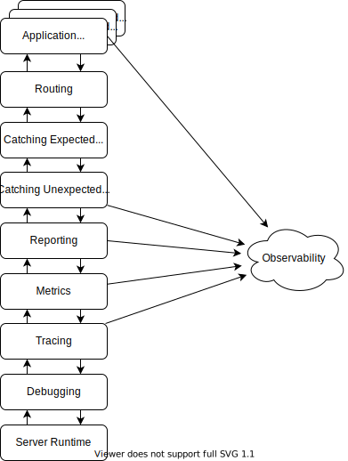

Introduction
1. About This Book
TBD
2. Acknowlegements
Thank you to Chris James (AKA Quii), who came up with the catchy "Learn <thing> with tests" name and kindly allowed me to reuse it for http4k. Check out his book, Learn Go With Tests, for an introduction to programming, and testing, in the Go language.
Thanks to Dave Denton and Ivan Sanchez, authors of http4k, for answering my questions about how and why http4k works the way it does.
Thanks to Dave Denton, and Michael W, for reviewing early versions of the book and giving helpful feedback.
3. Setting up the Build
Before we can start writing http4k web apps, we need a Kotlin build that includes the http4k dependencies.
I’m assuming that you use Gradle: at the time of writing it’s the default build tool for Kotlin projects. I’m also assuming that you’re writing your Gradle build scripts in Kotlin, not Groovy: at the time of writing it’s the default syntax for Gradle builds. To get started quickly, you can get IntelliJ to create a new Kotlin JVM project and it will generate a working Gradle build script to which you can add the http4k dependencies.
Add the following dependencies to bring in the core http4k module:
implementation(platform("org.http4k:http4k-bom:6.17.0.0"))
implementation("org.http4k:http4k-core")If you’re used to Java frameworks like Spring Boot, you’ll find that http4k has a quite different philosophy. Spring Boot follows a "batteries included" approach. It includes a large number of dependencies by default. Its behaviour can depend on what it finds on the classpath at runtime, which makes getting started easy but can lead to surprises as a project grows. http4k may be characterised as "batteries readily available". It has a small core that has no dependencies beyond the Kotlin standard library and lots of optional modules, most of which bring in additional dependencies. Applications explicitly depend only on the modules they actually need. http4k will not activate features if a module happens to be on the classpath. Applications have to explicitly compose into their application the features they want to use from http4k’s modules.
The http4k project publishes versions of the toolkit as a "bill of materials" (BOM) that specifies consistent versions of all the http4k modules and their transitive dependencies. In your build script, you depend on a specific version of the BOM as a platform dependency, and then you don’t need to specif the versions of each http4k module your project uses. When a new http4k version is released, you only need to change the version of the BOM to upgrade all the http4k modules in your project. http4k releases quite frequently (sometimes multiple times a day!), but upgrades are easy to adopt and because the http4k API is very narrow, new versions seldom require source code changes.
As we continue through the book, we will add dependencies on other http4k modules as needed, but this is enough to be able to write our first http4k application. However, it’s not enough for us to be able to test our first http4k application. For testing, we will add the kotlin-test-junit5 module of the Kotlin standard library:
testImplementation(kotlin("test-junit5"))Here’s the entire Gradle build file:
plugins {
kotlin("jvm") version "2.2.10"
}
repositories {
mavenCentral()
}
dependencies {
implementation(platform("org.http4k:http4k-bom:6.17.0.0"))
implementation("org.http4k:http4k-core")
testImplementation(kotlin("test-junit5"))
}
tasks.test {
useJUnitPlatform()
}
kotlin {
jvmToolchain(21)
}Now let’s write a Hello World app to check our build script works and start exploring the http4k API.
I: The Fundamentals of Http4k
In this part, we examine the fundamental concepts in http4k, by writing a tiny Hello World application. This will give us the foundations we need for Part II, “Production Applications”, that looks at how http4k meets the needs of production applications.
4. Server as a Function
4.1. Request, Response and HttpHandler
Let’s jump straight in. Here’s "Hello World" in http4k:
val app : HttpHandler = { request ->
Response(OK).body("hello, world")
}An http4k application is a value of type HttpHandler, which is a function from Request to Response.
You can navigate to the definition of HttpHandler in IntelliJ and see that it is nothing more than a function:
typealias HttpHandler = (request: Request) -> ResponseAlmost everything an http4k web app must do is implemented by functions of HttpHandler functions. Routing? Functions. Content negotiation? Functions. Views and templates? Functions. I could go on… and I will! Authentication? Functions. Error handling? Functions. Observability? Functions. HTTP clients? Functions. Resilience? Functions. OK, I’ll stop now. If you have a question, the answer is usually "Functions!" and those functions usually take a Request and return a Response, or compose functions that take a Request and return a Response into a new function that takes a Request and returns a Response.
The HttpHandler for our Hello World app doesn’t do anything with the request (yet), and returns a Response with a status of 200 OK and a body of the text "hello, world".
It’s conventional to define an HttpHandler as a lambda, not a named function to make it easier to pass it around as a value. If declared as a named function we would have to refer to the handler value as ::app instead of app. http4k apps use HttpHandlers as first-class values extensively. They store them in variables, pass them into functions as parameters, return them from functions as results, and compose them with other HttpHandler functions to form new HttpHandler functions.
4.2. Running our App in a Server
To run our application, we need to launch it in a Server. A Server exposes the app on the network and translates between on-the-wire HTTP communication and http4k’s "server as a function" model. The http-core module contains a server implementation that uses the HttpServer class of the JDK, but that’s only suitable for local development and experiments. For production use, you can choose one of the server modules listed at https://www.http4k.org/ecosystem/http4k/reference/servers/ that is a good fit for your production environment. In this book we will use Jetty with Java’s virtual threads.
First, we must add a dependency on the http4k-server-jetty module to our build file:
implementation("org.http4k:http4k-server-jetty")Now we can write a main function for our app that calls the asServer extension to turn the application handler into a Jetty server, and starts it serving requests.
fun main() {
app.asServer(JettyLoom(port=0))
.start()
.also {
println("http://localhost:${it.port()}")
}
}If we click on the URL that is output (or copy and paste it into the address bar of a web browser) we can see the output of the application:

Passing port zero to the JettyLoom server configuration makes the server use a free port allocated by the operating system, so the port number you will see when you run the server will probably be different to the one in the screenshot. We will look at how to configure the port (and other properties of our application) in Chapter 11, Configuration.
4.3. Testing our App
An http4k app is just a function, and Requests and Responses are immutable values. That makes http4k apps very easy to test. We don’t need to spin up a server and use an HTTP client library to send requests to it. We don’t need to configure a special "mock" environment for testing with subtle differences to the real thing. Our tests can just call the function. This makes them fast and reliable.
As an application grows, it becomes convenient to write higher-level abstractions that abstract over the HTTP client. http4k models HTTP clients, like servers, as functions of type HttpHandler. To implement a server-side app you write an HttpHandler that receives a Request parameter and returns a Response. To use a client, you call the HttpHandler, passing a Request parameter and receive a Response as a result. We can compose code that would use an HTTP client to talk to an app directly with the HttpHandler of the app to test the integration of the two, and still get very fast, reliable tests that run entirely in memory. We will look at this in detail in Chapter 13, HTTP Clients. Given how small our app is at the moment, it is not a problem to call our app directly in the test.
Here’s a test that verifies our app returns a body of "hello, http4k":
class HelloWorldTest {
@Test
fun `returns hello everyone`() {
val response = app(Request(GET, "/"))
assertEquals(Status.OK, response.status)
assertEquals("hello everyone", response.bodyString())
}
}We’d expect that test to fail: our app actually returns "hello, world". By starting with a failing test, we confirm that our test is actually testing what we want it to, that we’re not getting false positives, and that the failure diagnostics are good enough.
HelloWorldTest > returns hello everyone() FAILED
org.opentest4j.AssertionFailedError: expected: <hello everyone> but was: <hello, world>
at app//learnhttp4kwithtests.HelloWorldTest.returns hello everyone(HelloWorldTest.kt:16)We can make the test pass by changing our app to match:
val app : HttpHandler = { request ->
Response(OK).body("hello everyone")
}We’ve bootstrapped a test-driven development process. From now on, we will write the tests first, check they fail for the reason we expect, discuss anything interesting about the error messages, and then implement code to make the tests pass.
4.4. Immutability
Requests and Responses are immutable values. The body operation called by our app does not set the body of the Response but returns a new Response value with the given body.
Compare immutable and here’s a test of code using the http4k API to define common properties for Requests and then derive two actual Requests with those common properties.
val commonProperties = Request(GET, "http://example.com")
.accept(APPLICATION_JSON)
val r1 = commonProperties.header("Authorization", "Bearer token-1")
val r2 = commonProperties.header("Authorization", "Bearer token-2")
assertEquals(listOf("Bearer token-1"), r1.headerValues("Authorization"))
assertEquals(listOf("Bearer token-2"), r2.headerValues("Authorization"))This test passes.
Here’s a test of similar code written with Spring:
val commonProperties = RequestEntity.method(GET, "http://example.com")
.accept(APPLICATION_JSON)
val r1 = commonProperties.header("Authorization", "Bearer token-1").body(null)
val r2 = commonProperties.header("Authorization", "Bearer token-2").body(null)
assertEquals(listOf("Bearer token-1"), r1.headers["Authorization"])
assertEquals(listOf("Bearer token-2"), r2.headers["Authorization"])This test fails with the error:
Expected :[Bearer token-1] Actual :[Bearer token-1, Bearer token-2]
In the Spring code, the object refered to by commonProperties is mutable. The lines that calculate r1 and r2 mutate that object. State leaks between r1 and r2 without the data flow being is visible in the source code.
Immutability makes data flow in http4k applications explicit and easy to follow with IntelliJ’s code navigation tools. There is no mutable state that allows the kind of "spooky action at a distance" possible with the Spring APIs. However, working with immutable data is a lot easier if we are familiar with another fundamental mechanism in http4k, lenses, so we will look at them next, in Chapter 5, Headers and Lenses.
5. Headers and Lenses
5.1. Convenient Extensions of Request and Response
Our Hello World app doesn’t report the content type of the greeting it sends. It should send a Content-Type header in the response to tell the client that the content is plain text.
http4k defines many convenient extension functions on Response, including extensions to get and set the Content-Type header.
Well … not "set" but "return a new Response value that is a copy of the original Response value but with a Content-Type header with the given value". That’s quite a mouthful, so I’ll use keep using the word "set" as a shorthand, with the understanding that the operation transforms an immutable value rather than mutates state of a mutable object.
Anyway, we can add a check for the content type to the test of our app using the convenient getter:
class HelloWorldTest {
@Test
fun `returns hello everyone`() {
val response = app(Request(GET, "/"))
assertEquals(Status.OK, response.status)
assertEquals("hello everyone", response.bodyString())
assertEquals(TEXT_PLAIN, response.contentType())
}
}org.opentest4j.AssertionFailedError: Expected :ContentType(value=text/plain, directives=[(charset, utf-8)]) Actual :null
We can make the test pass by using the extension that sets the Content-Type header. http4k defines constants for many common content types as members of the companion object of the ContentType class, including the one we want: TEXT_PLAIN.
val app : HttpHandler = { request ->
Response(OK)
.contentType(TEXT_PLAIN)
.body("hello everyone")
}5.2. Lenses
The contentType helper functions are actually implemented using another fundamental concept of http4k: lenses. Lenses are often considered an advanced functional programming topic, but so much of http4k depends on them that we need to bite the bullet and understand how they work now. Don’t worry: the essential concept is pretty simple.
If we inline calls to the contentType extensions, we can see the lenses at work:
class HelloWorldTest {
@Test
fun `returns hello everyone`() {
val response = app(Request(GET, "/"))
assertEquals(Status.OK, response.status)
assertEquals("hello everyone", response.bodyString())
assertEquals(TEXT_PLAIN, Header.CONTENT_TYPE(response))
}
}val app : HttpHandler = { request ->
Response(OK)
.with(Header.CONTENT_TYPE of TEXT_PLAIN)
.body("hello everyone")
}A lens represents part of a structured type. For example, the Header.CONTENT_TYPE lens represents the value of the Content-Type header in an HttpMessage (the base type of Request or Response).
If you have a value of the structured type, you can treat the lens as a one-argument function that, when applied to a structure value, extracts the part from it. Our test applies the Header.CONTENT_TYPE lens to the Response to get the value of the Content-Type header of that Response.
You can also use a lens as a two-argument function, taking a part and a structure, that returns a new structure containing the part. Our app uses the Header.CONTENT_TYPE lens to combine a value for the Content-Type header and a Response without a Content-Type header to get a Response with a Content-Type header of the given value.
If that’s confusing, I would normally suggest taking a look at the type declarations, but http4k’s type declarations for lenses are quite complex, with a rich type hierarchy that is of help when you need to create new types of lens, but does get in the way of understanding the simple essence of lenses. Let’s instead use tests to build an intuition of how lenses behave.
class LensExample {
@Test
fun `lens inject and extract example`() {
val lens = Header.CONTENT_TYPE
val responseWithoutHeader: Response = Response(OK).body("hello, http4k")
assertNull(lens(responseWithoutHeader),
"the lens returns null when the header does not exist")
val responseWithHeader: Response = lens(ContentType("application/example"), responseWithoutHeader)
assertNull(lens(responseWithoutHeader),
"the lens has not changed responseWithoutHeader")
assertEquals(ContentType("application/example"), lens(responseWithHeader),
"the lens has created a new response with the header")
}
}It should now be clear how our test is using the Header.CONTENT_TYPE lens to extract the value of the Content-Type header from the Response. But what are the of and with(…) operations doing in the app? Let’s use more tests to see what they do.
Of is an infix extension that binds the first argument of the lens' two-argument setter function, returning a one-argument setter function that always sets the same value of the part. For example:
@Test
fun `of creates a setter function bound to a specific part value`() {
val textPlainContentTypeSetter: (Response) -> Response =
Header.CONTENT_TYPE of TEXT_PLAIN
val responseWithoutHeader: Response = Response(OK).body("hello, http4k")
val responseWithHeader = textPlainContentTypeSetter(responseWithoutHeader)
assertNull(Header.CONTENT_TYPE(responseWithoutHeader),
"the lens has not changed responseWithoutHeader")
assertEquals(TEXT_PLAIN, Header.CONTENT_TYPE(responseWithHeader),
"the setter has created a new response with the header")
}With is syntactic sugar that applies one or more bound setters to a structure in one call:
@Test
fun `with applies one or more bound setter functions`() {
val responseWithoutHeader: Response = Response(OK).body("hello, http4k")
val textPlainContentTypeHeader: (Response) -> Response =
Header.CONTENT_TYPE of TEXT_PLAIN
val canonicalLinkHeader : (Response) -> Response =
Header.LINK of mapOf("canonical" to Uri.of("/hello"))
val responseWithHeaders = responseWithoutHeader
.with(textPlainContentTypeHeader, canonicalLinkHeader)
assertEquals(
responseWithHeaders,
canonicalLinkHeader(textPlainContentTypeHeader(responseWithoutHeader)),
"with and of are more readable than using lenses as functions"
)
assertEquals(
actual = Header.CONTENT_TYPE(responseWithHeaders),
expected = TEXT_PLAIN,
message = "the new response has the Content-Type header"
)
assertEquals(
actual = Header.LINK(responseWithHeaders),
expected = mapOf("canonical" to Uri.of("/hello")),
message = "the new response has the Location header"
)
}Together with and of make code that uses lenses to set values easier to read. If we used lenses as functions in our code, we would end up with deeply nested function calls and lots of parentheses. Using with and of we avoid all the parentheses and our code refers to the lenses and values in an order that reads more naturally.
5.3. Defining a New Header Lens
Let’s also signal that our app’s greeting is in English by sending the Content-Language response header. Here’s our test extended to include the behaviour we want:
class HelloWorldTest {
@Test
fun `returns hello everyone`() {
val response = app(Request(GET, "/"))
assertEquals(Status.OK, response.status)
assertEquals("hello everyone", response.bodyString())
assertEquals(TEXT_PLAIN, Header.CONTENT_TYPE(response))
assertEquals(Locale.ENGLISH, Header.CONTENT_LANGUAGE(response))
}
}That test doesn’t even compile. http4k doesn’t have a lens for the Content-Language header. We will need to write it ourselves.
We could define it as a top-level constant in our app, but http4k’s naming convention is to group lenses by the part of the HttpMessage that they refer to: Body, Header, Path, Query, etc. If we are working in a team, or publishing a library, following this convention will help other developers find our new lens with autocomplete in the IDE.
We can follow http4k’s naming convention by writing our lens as extension of the Header object.
val Header.CONTENT_LANGUAGE get() =
Header.map(Locale::forLanguageTag, Locale::toLanguageTag)
.optional("content-language")As well as being a scope for header lenses, the Header object is a partially defined lens that represents some value of type String within the headers of an HttpMessage. Partially defined, because to be a fully defined lens that targets a specific header, it needs the name of the header. This is what the call to optional does. The map method turns the (partially defined) lens for a String into a lens for a Locale by mapping in both directions between String and Locale. The mapping is defined by two functions. The function of type (String)→Locale is used when getting the header value. The function of (Locale)→String is used when setting the header value.
My brain finds that http4k’s lens declarations read backwards. I would find an API like Header.named("content-language").map(…).optional() easier to understand, but the API is what it is, and it works. As an author I struggle to explain it well (sorry about that!), but as a developer I can define new types of lens very easily and succinctly. And when you use http4k, you define new lenses a lot!
With the definition of the CONTENT_LANGUAGE lens, our test compiles, and now fails as we expect:
HelloWorldTest > returns hello everyone() FAILED
org.opentest4j.AssertionFailedError: expected: <en> but was: <null>
at app//learnhttp4kwithtests.HelloWorldTest.returns hello everyone(HelloWorldTest.kt:21)We can make it pass by using the lens to set the header value in the with call in our main app:
val app: HttpHandler = { request ->
Response(OK)
.with(
Header.CONTENT_TYPE of TEXT_PLAIN,
Header.CONTENT_LANGUAGE of Locale.ENGLISH
)
.body("hello everyone")
}And now our test passes.
We can make a small optimisation, to avoid constructing a new lens value every time we refer to it:
private val contentLanguageLens =
Header.map(Locale::forLanguageTag, Locale::toLanguageTag)
.optional("content-language")
val Header.CONTENT_LANGUAGE get() = contentLanguageLensOur test still passes.
And the Kotlin compiler will generate the backing field and getter function for us if we define the extension using property delegation:
val Header.CONTENT_LANGUAGE by lazyOf(
Header.map(Locale::forLanguageTag, Locale::toLanguageTag)
.optional("content-language")
)|
Note
|
The lazyOf function in Kotlin’s standard library actually creates a property delegate for an eagerly constructed value!
|
This is the most concise and efficient way I know to define extension properties, so we’ll use this idiom for any more that we need.
6. Routing
So far our application ignores the request. This means that a client can get any URL and get the same text. In real apps, we need to serve different resources on different URLs and perform different actions depending on the HTTP method and other properties of the request. In http4k, this is done by routing each request to a handler that can serve it.
In this chapter we extend our Hello World application to serve greetings in different languages on different paths. We will serve the existing behaviour from a route "/hello/en", and add "/hello/fr" for French, "/hello/de" for German, and so on. Our paths will use standard ISO 639-1 language codes to identify each language, so we don’t have to invent our own identifier scheme.
Let’s start by changing our test to check that we can get the English greeting on the "/hello/en" path. This test should pass because our app’s handler does not depend on any properties of the request:
@Test
fun `returns hello in English`() {
val response = app(Request(GET, "/hello/en"))
assertEquals(Status.OK, response.status)
assertEquals("hello everyone", response.bodyString())
assertEquals(TEXT_PLAIN, Header.CONTENT_TYPE(response))
assertEquals(Locale.ENGLISH, Header.CONTENT_LANGUAGE(response))
}As expected, the test passes.
Now let’s add a test that the app also serves the greeting in French on the path "/hello/fr".
@Test
fun `returns hello in French`() {
val response = app(Request(GET, "/hello/fr"))
assertEquals(Status.OK, response.status)
assertEquals("bonjour tout le monde", response.bodyString())
assertEquals(TEXT_PLAIN, Header.CONTENT_TYPE(response))
assertEquals(Locale.FRENCH, Header.CONTENT_LANGUAGE(response))
}The test for English still passes and the test for French fails as expected:
HelloWorldTest > returns hello in French() FAILED
org.opentest4j.AssertionFailedError: expected: <bonjour tout le monde> but was: <hello everyone>
at app//learnhttp4kwithtests.HelloWorldTest.returns hello in French(HelloWorldTest.kt:32)Now we need to make our app route requests to different handler behaviour based on the value of the path.
6.1. Routing Requests to Handlers
http4k builds routing rules with the routes function that returns an HttpHandler that chooses which of a collection of handlers should receive each request. The most common routing criteria is by path and method, but http4k can route by path, query parameters, method, header values, and body content. The routing criteria is defined by — you guessed it — functions, so you can write your own criteria if your application needs more sophisticated routing.
It’s easier to explain with an example. We’ll follow the "copy/paste/refactor" method of extending the app: create a router, copy/paste the existing handler to add more routes, change the new handlers to make the test pass, and then refactor away whatever duplication we created to discover abstractions that better express what the app is doing. Here’s the first step:
val app: HttpHandler = routes(
"/hello/en" bind GET to { request ->
Response(OK)
.with(
Header.CONTENT_TYPE of TEXT_PLAIN,
Header.CONTENT_LANGUAGE of Locale.ENGLISH
)
.body("hello everyone")
},
"/hello/fr" bind GET to { request ->
Response(OK)
.with(
Header.CONTENT_TYPE of TEXT_PLAIN,
Header.CONTENT_LANGUAGE of Locale.FRENCH
)
.body("bonjour tout le monde")
}
)What varies between each handler is the text and the language identifier that are returned in the response. We can extract a common function for creating the response used by all the handlers:
val app: HttpHandler = routes(
"/hello/en" bind GET to { greetingResponse(Locale.ENGLISH, "hello everyone") },
"/hello/fr" bind GET to { greetingResponse(Locale.FRENCH, "bonjour tout le monde") }
)
private fun greetingResponse(language: Locale, text: String) =
Response(OK)
.with(
Header.CONTENT_TYPE of TEXT_PLAIN,
Header.CONTENT_LANGUAGE of language
)
.body(text)6.2. Extracting Values from a Request
There’s still some duplication between the language identifier in the path and the language identifier returned in the response. There’s a risk we could introduce bugs by getting them out of sync, and that means more testing effort to ensure we don’t. We can address that by making the app more data-driven and having it work from a mapping of language to greeting, like:
private val greetings = mapOf(
Locale.ENGLISH to "hello everyone",
Locale.FRENCH to "bonjour tout le monde",
)We will replace our app’s language-specific routes with a single route whose handler will parse the language identifier from the path of the request and use it to look up the text to return.
That’s quite a significant refactoring, and we risk changing the way our app reports errors when the client requests a language we do not support. Let’s lock down that behaviour with an additional test before refactoring:
@Test
fun `returns Not Found if language not supported`() {
val response = app(Request(GET, "/hello/xx"))
assertEquals(Status.NOT_FOUND, response.status)
}To extract the language identifier from the path of the request we need a lens, like the Header.CONTENT_LANGUAGE lens we defined earlier, but that targets a path element of the request. Lenses that target the path of a request are created from the Path object:
fun Path.languageTag() = map(Locale::forLanguageTag, Locale::toLanguageTag)
val language = Path.languageTag().of("language")The conventions for the Path object are somewhat different to the Header object. Path defines a large number of factory functions for create different types of lens, but not any actual lenses:
fun Path.string() = this
fun Path.nonEmptyString() = map(StringBiDiMappings.nonEmpty())
fun Path.nonBlankString() = map(StringBiDiMappings.nonBlank())
fun Path.int() = mapWithNewMeta(StringBiDiMappings.int(), IntegerParam)
fun Path.long() = mapWithNewMeta(StringBiDiMappings.long(), IntegerParam)
fun Path.double() = mapWithNewMeta(StringBiDiMappings.double(), NumberParam)
fun Path.float() = mapWithNewMeta(StringBiDiMappings.float(), NumberParam)
fun Path.bigInteger() = mapWithNewMeta(StringBiDiMappings.bigInteger(), IntegerParam)
fun Path.bigDecimal() = mapWithNewMeta(StringBiDiMappings.bigDecimal(), NumberParam)
fun Path.boolean() = mapWithNewMeta(StringBiDiMappings.boolean(), BooleanParam)
... etc. etc.Applications use these factory functions to define the lenses for their URL paths. Http4k does not define a lens for language tags, so we have to define our own and use it to define a path lens.
We can use the lens to define a path template that http4k’s routing will use to parse the language tag out of the path as it routes the request:
val app: HttpHandler = routes(
"/hello/${language}" bind GET to { request ->
val lang = language(request)
val text = greetings[lang]
when (text) {
null -> Response(NOT_FOUND)
else -> greetingResponse(lang, text)
}
}
)Our tests still all pass.
And now we can easily support more languages by adding them to the map, without touching the HTTP layer:
private val greetings = mapOf(
Locale.ENGLISH to "hello everyone",
Locale.FRENCH to "bonjour tout le monde",
Locale.GERMAN to "hallo zusammen",
Locale.CANADA_FRENCH to "allô a tous, hein?",
)6.3. Routing different methods to a resource
So far our app only routes by path. Web applications also have to support other HTTP methods. To explore routing by method, let’s allow clients to set and remove the greeting text for each language by using the PUT and DELETE methods. For now, we will ignore security. We’ll look at authentication and authorisation in http4k in Chapter 16, OAuth, Authentication and Authorisation and pretend it is being handled by a service mesh for the time being! And we’ll continue to store the greetings in memory. We look at database persistence in Chapter 12, Persistence and transactions, but will use a mutable map for the time being.
Let’s start by writing a test. If the app can change the state of the map, we now need to make sure that tests are isolated from one another. Each test needs to start the application with its own map instance, initialised to a known state. That means the app cannot be a global value that depends on the map as a global variable. It must be created by, you guessed it, a function, that takes the map of greetings as a parameter.
IntelliJ can perform this transformation as a sequence of small refactorings in a few keystrokes. If you’re following along in the Git repository, you’ll see that’s how we did the transformation ourselves. But this is a book about learning http4k, not refactoring techniques, so we can jump to the end result.
Our test class instantiates the greetings map and app for each test:
class HelloWorldTest {
val greetings = mutableMapOf(
Locale.ENGLISH to "hello everyone",
Locale.FRENCH to "bonjour tout le monde",
)
val app = app(greetings)
@Test
fun `returns hello in English`() {
val response = app(Request(GET, "/hello/en"))
assertEquals(Status.OK, response.status)
assertEquals("hello everyone", response.bodyString())
assertEquals(TEXT_PLAIN, Header.CONTENT_TYPE(response))
assertEquals(Locale.ENGLISH, Header.CONTENT_LANGUAGE(response))
}
...
}The greetings map no longer needs to be global. The main method can declare it as a local variable, which guarantees that our app logic only refers to it through the parameter of the app function. It creates a ConcurrentHashMap to ensure thread safety because the Jetty server that serves our app spawns multiple threads:
fun main() {
val greetings = ConcurrentHashMap(mapOf(
Locale.ENGLISH to "hello everyone",
Locale.FRENCH to "bonjour tout le monde",
Locale.GERMAN to "hallo zusammen",
Locale.CANADA_FRENCH to "allô a tous, hein?",
))
app(greetings)
.asServer(JettyLoom(port = 0))
.start()
.also {
println("http://localhost:${it.port()}")
}
}We can now write a test for adding a new greeting:
@Test
fun `can put a greeting for a language`() {
val putResponse = app(Request(PUT, "/hello/it")
.with(Header.CONTENT_TYPE of TEXT_PLAIN)
.body("ciao a tutti")
)
assertEquals(Status.OK, putResponse.status)
assertEquals("ciao a tutti", app(Request(GET, "/hello/it")).bodyString())
}We expect this test to fail because our app doesn’t yet handle the PUT method, and it does:
HelloWorldTest > can put a greeting for a language() FAILED
org.opentest4j.AssertionFailedError: expected: <200 OK> but was: <405 Method Not Allowed>
at app//learnhttp4kwithtests.HelloWorldTest.can put a greeting for a language(HelloWorldTest.kt:65)And now we can extend our app to define the behaviour for the PUT method:
fun app(greetings: MutableMap<Locale, String>): HttpHandler = routes(
"/hello/${language}" bind routes(
GET to { request ->
val lang = language(request)
val text = greetings[lang]
when (text) {
null -> Response(NOT_FOUND)
else -> greetingResponse(lang, text)
}
},
PUT to { request ->
val lang = language(request)
val text = request.bodyString()
greetings[lang] = text
Response(OK)
}
)
)We can add another test to specify how to remove a greeting:
@Test
fun `can remove a greeting for a language`() {
val deleteResponse = app(Request(DELETE, "/hello/fr"))
assertEquals(Status.OK, deleteResponse.status)
assertEquals(NOT_FOUND, app(Request(GET, "/hello/fr")).status)
}And I’ll leave it as an exercise to make that pass, and also to write tests for other cases, such as overwriting an existing greeting, or deleting a greeting that does not exist.
7. Filters and stacks
Implement "proactive content negotiation" via the Accept-Language header. The "/hello" path will select text based on client preferences. For example:
@Test
fun `returns best available language by content negotiation`() {
val languagePreferences = PriorityList(
// Prefer Welsh
Exactly(Locale.of("cy")) q 1.0,
// but will grudgingly accept English
Exactly(Locale.ENGLISH) q 0.5,
// or whatever the server can provide, as a fallback.
Wildcard q 0.25
)
val responseByNegotiation = app(
Request(GET, "/hello")
.with(Header.ACCEPT_LANGUAGE of languagePreferences)
)
// Response should be the same as fetching English content explicitly but
// with a Vary header reporting the content negotiation that occurred.
val expectedResponse = app(Request(GET, "/hello/en"))
.header("vary", "accept-language")
assertEquals(expectedResponse, responseByNegotiation)
}Note that the test depends on Responses being values and that we can compare them for equality.
And here’s what should happen when content negotiation does not find a language acceptable to the client:
@Test
fun `reports when no acceptable language is available`() {
val request = Request(GET, "/hello")
.with(
Header.ACCEPT_LANGUAGE of PriorityList(
Exactly(Locale.of("cy")) q 1.0,
Exactly(Locale.ITALIAN) q 0.5
)
)
val response = app(request)
assertEquals(Status.NOT_ACCEPTABLE, response.status)
assertEquals("accept-language", response.header("vary"))
}The following route implements content negotiation.
"/hello" bind GET to { request ->
val prefs = Header.ACCEPT_LANGUAGE(request)
val selected: Locale? = when (prefs) {
null -> Locale.ENGLISH
else -> prefs.preferred(greetings.keys.toList())
}
val response = when (selected) {
null -> Response(NOT_ACCEPTABLE)
else -> greetingResponse(selected, greetings.getValue(selected))
}
response
.header("vary", Header.ACCEPT_LANGUAGE.meta.name)
},You may be wondering, what happens if the Header.ACCEPT_LANGUAGE lens cannot parse the Accept-Language header. Let’s write a test and see…
@Test
fun `malformed accept-language header`() {
val request = Request(GET, "/hello")
.header("accept-language", "en;q=xxx")
val response = app(request)
assertEquals(BAD_REQUEST, response.status)
}The test fails with:
HelloWorldTest > malformed accept-language header() FAILED
org.http4k.lens.LensFailure: header 'accept-language' must be priority list of language
Caused by: java.lang.NumberFormatException: For input string: "xxx"If any of the functions that define a lens throws an exception, http4k wraps that exception in a LensFailure and rethrows it. In the test, the exception propagates up to JUnit, which reports it as a test failure.
What happens in a running application? Let’s write a test and see…
class HelloWorldIntegrationTest {
val app: HttpHandler = app(mutableMapOf())
val server = app.asServer(JettyLoom(0))
val url by lazy { "http://localhost:${server.port()}/hello" }
val client: HttpHandler = JavaHttpClient()
@BeforeEach
fun startServer() { server.start() }
@AfterEach
fun stopServer() { server.stop() }
@Test
fun `testing lens failure`() {
val request = Request(GET, url)
.header("accept-language", "en;q=xxx")
val response = client(request)
assertEquals(BAD_REQUEST, response.status)
}
}The test creates an HTTP server and client. This is the first time we’ve created an HTTP client. In http4k}, a client is an HttpHandler! To write an app, we implement an HttpHandler that receives a Request and returns a Response. To use a client, we call an HttpHandler, passing in a Request and getting a Response as a result. We look at HTTP clients in more detail in Chapter 13, HTTP Clients.
The integration test fails with:
HelloWorldIntegrationTest > testing lens failure() FAILED
org.opentest4j.AssertionFailedError: expected: <400 Bad Request> but was: <500 >
at app//learnhttp4kwithtests.HelloWorldIntegrationTest.testing lens failure(HelloWorldIntegrationTest.kt:35)The last-ditch exception handler in the server runtime catches the LensFailure thrown from our app and returns a 500 Internal Server Error response to the client. This is not correct: the malformed request is the fault of the client, not the server. The response should be 400 Bad Request. If our app reports an internal server error when a client sends a bad request, a faulty client will keep retrying the request, alerting the engineers on support duty and adding load to our system. Our application must therefore catch LensFailure exceptions and translate them to the correct response status code.
Now, we don’t want to duplicate that try/catch code in every handler in our application. The solution in http4k is filters, and specifically the CatchLensFailure filter.
Let’s look at the filter in use, and then examine what the code is doing.
fun app(greetings: MutableMap<Locale, String>): HttpHandler =
ServerFilters.CatchLensFailure(greetingRoutes(greetings))
private fun greetingRoutes(greetings: MutableMap<Locale, String>) =
routes(
"/hello" bind GET to { request ->
...
},
"/hello/${language}" bind routes(
...
)
)I’ve refactored the routes out of the app into its own function, so that it’s easier to see how the filter is applied.
A filter is a higher-order function of HttpHandler to HttpHandler. It takes an HttpHandler – let’s call it the "next handler" – and returns a new HttpHander that delegates to the next handler, and can perform behaviour before or after the call to the next handler.
The handler created by the CatchLensFailure filter wraps the call to the next handler in a try/catch block that catches LensFailure exceptions and returns a Response with a 400 Bad Request status code. There are various factory functions for CatchLensFailure that give you control over how the exception is translated into a response, but the default is good enough for our needs.
|
Note
|
The LensFailure exception is a design compromise. The type declarations for lenses and the developer experience of using lenses would much more complicated if errors had to be represented in the type of the lens. Therefore, Dave and Ivan took a pragmatic decision to report failures from lenses with exceptions instead of return types. In practice, it works fine despite exceptions not being type checked because the translation is performed in one place, the CatchLensFailure filter, instead of duplicated in every handler. |
7.1. Other Useful Filters
The handler created by a Filter can modify the request before passing it to the next handler or modify the response from the next handler before returning the response to its caller. It can shortcut request handling by returning a response without ever passing the request to the next handler. It can catch exceptions thrown by the next handler and translate them into responses. Anything a higher-order function can do, a filter can do, because a filter is just a higher-order function.
|
Note
|
Filter is defined as a fun interface, not as a function type. That means you can call a Filter with function call syntax, but not pass it to code that expects a value of a function type. I’ve no idea why Filter is declared this way, but it’s not possible to change the declaration to a typealias of a function tyoe without breaking lots of code, so a fun interface it has to stay.
|
http4k comes with an abundance of useful filters. Among them:
-
CatchAllcatches any exception and translates it into a Response, usually with status 500 Internal Service Error, so that your app can control the representation of errors sent to the client. -
ReportHttpTransactionreports incoming or outgoing requests and responses for observability. -
RequestTimerandRequestCounterrecord metrics. -
Corssets headers for cross-origin resource sharing -
RequestTracingadds headers for distributed tracing between services.
Each filter implements one aspect of request processing. An application composes them together to define the request processing that it needs.
-
Composing filters into stacks
A typical application stack looks like this:

-
Server runtime, to receive requests and send responses
-
Debugging, to ensure that we see all traffic during development
-
Tracing, to trace requests between services and associate log events to traces
-
Recording metrics, to track how long request processing took
-
Reporting traffic, to record accurately what we sent back to the client
-
Catching unexpected exceptions, to ensure that error responses are controlled by the application
-
Catching expected exceptions, for instance LensFailures which are converted to 400s
-
The application:
-
Routing, to route traffic to the handler that can process the traffic
-
HttpHandlers, to process the traffic
-
7.2. Writing a filter
TBD
8. Http4k Application Structure
Our trivial Hello World application has grown to have the typical top-level structure of an http4k application.
The app factory function creates the HttpHandlers of the application and defines the routing of requests to those handlers. The factory function is parameterised by the resources that the application requires: the mutable map of greetings. Operational aspects are composed into the app by a filter stack. The main function initialises the resources, passes them to the factory function to creates the HttpHandler, composes operation aspects into the app via Filters, and starts a Server to run the app.
However, as we’ve been building the app, we’ve written everything in one source file, and all the app’s handlers in a single function. That source file is now quite large, and the routes function likewise is too long. It’s hard to read: the routing rules do not fit on the screen of my laptop. If we were working in a team, we would get frequent merge conflicts as team members all make changes to the same function.
We can split the source into separate files: routes.kt for the app routing and handlers, stack.kt for the filter stack, and main.kt for the app and main function that compose it all together.
We can also extract each handler into its own top-level function. HttpHandlers are just functions, so this is quick to do with IntelliJ’s Extract Function to Scope refactoring, and easy to reverse with IntelliJ’s Inline refactoring if we don’t like the result. The fast tests will let us quickly confirm that our refactoring has not changed our application’s behaviour.
There are a couple of structures we can refactor to. Let’s try them both.
We could factor out each route as a top-level function, composed together in the app-level greetingRoutes function.
fun greetingRoutes(greetings: MutableMap<Locale, String>) = routes(
getPreferredGreetingRoute(greetings),
getGreetingRoute(greetings),
putGreetingRoute(greetings),
deleteGreetingRoute(greetings)
)
...
private fun getGreetingRoute(greetings: MutableMap<Locale, String>): RoutingHttpHandler =
"/hello/${language}" bind GET to { request ->
val lang = language(request)
val text = greetings[lang]
when (text) {
null -> Response(NOT_FOUND)
else -> greetingResponse(lang, text)
}
}
...This has the benefit that the path and the lenses used to extract parameters from the path are in the same scope. However, the path ends up duplicated in the functions getGreetingRoute, putGreetingRoute and deleteGreetingRoute.
Alternatively, we could factor out each handler as a top-level function, leaving the routes defined together in the greetingRoutes function. Now we have to pass the lens used extract the language tag from the path into the handler to avoid too much connascence between the greetingRoutes function and each handler.
fun greetingRoutes(greetings: MutableMap<Locale, String>): RoutingHttpHandler =
routes(
"/hello" bind GET to getPreferredGreetingHandler(greetings),
"/hello/${language}" bind routes(
GET to getGreetingHandler(language, greetings),
PUT to putGreetingHandler(language, greetings),
DELETE to deleteGreetingHandler(language, greetings)
)
)
...
private fun getGreetingHandler(
language: PathLens<Locale>,
greetings: MutableMap<Locale, String>
): HttpHandler = { request ->
val lang = language(request)
val text = greetings[lang]
when (text) {
null -> Response(NOT_FOUND)
else -> greetingResponse(lang, text)
}
}
...Personally, I prefer the second approach. It lets me see all the app’s routes in one place, and I can write exhaustive unit tests for the behaviour of each handler independently of the routing, if I need to. If the application gets so large that a single routes function becomes impractical, I organise the routes into separate functions that each create the routes for one type of resource.
II: Production Applications
9. Writing a Functional Test
-
The application domain: auctions
-
Architecture
-
HTTP service
-
Simplifying assumptions
-
Assume a service mesh
-
Blind auctions
-
Walking skeleton
-
Acceptance test - strategy - either write the test you want to see or write anything and refactor as you go. We’ll do the latter because we want to focus on learning http4k.
-
Write an acceptance test for the happy-path flow we want to implement
-
Create a new auction
-
fetch details of an auction
-
Bid in an auction
-
Close the auction and choose a winner
-
Hand-code the json
-
That gives us a failing test. We can use that test to track progress as we implement the happy path
10. JSON serialisation
-
Choosing a marshaller
-
Body lenses for json serde
-
We will autocomplete declarations we need into existence and move them into appropriate packages as the system grows
-
Forkhandles: complementary libraries. Values4k for IDs.
11. Configuration
-
Configuration keys and lenses
-
Sources of configuration
-
Configuring the port number
12. Persistence and transactions
-
Immutable domain model
-
Contract tests for persistence abstractions
-
In-memory implementation for testing
-
Postgres nosql implementation to demonstrate principle. It’ll do for now.
-
Testing the transactor… off topic, leave as an exercise for the reader
13. HTTP Clients
-
Hand coded json is brittle and hard to evolve
-
We will write an http client for our tests, that maps from domain model to http transactions
-
Http4k Connect pattern
14. Error handling
-
Risks of error handling bugs - retry storms, etc.
-
Result4k vs exceptions. Result4k for when we want to write code to process the error — eg when we want to control the http status. Exceptions for technical errors, when the top-level error handling filter and 500 status is acceptable.
-
Railway oriented programming
15. Monitoring and alerting
-
Preventing and reporting shill bidding
-
Events and structured logging
16. OAuth, Authentication and Authorisation
17. Transactional outboxes and background tasks
-
English auctions
18. Resilience
19. Contracts and OpenAPI
20. Front End: HTML, HTMX, & templates
21. Multiservice applications
-
Http client as a function
-
Tracing filters
-
Circuit breaker
-
Testing multiservice applications
-
Visualising test traces
22. File uploads and streaming content
-
E.g. upload/download product photos
23. API evolution
-
Kondor: JSON formats as first class values
-
Different content types (json formats) mapped to the same domain objects
-
Content negotiation